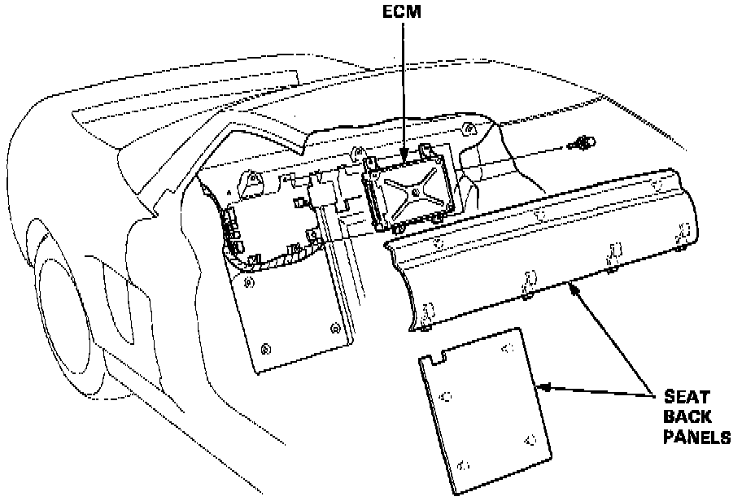
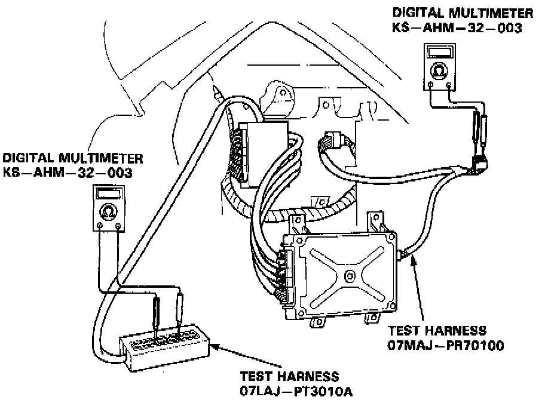

Inspecting Harness or Connectors


If the inspection for a particular code requires the test harness, remove the seat back panels. Unbolt the ECM. Connect the test harness. Then check the system according to the procedure described for the appropriate code(so) listed on the following pages.
CAUTION: Puncturing the insulation on a wire can cause poor or intermittent electrical connections.

For testing at connectors other than the test harness, bring the tester probe into contact with the terminal from the connector side of wire harness connectors in the engine compartment. For female connectors, just touch lightly with the tester probe and do not insert the probe.